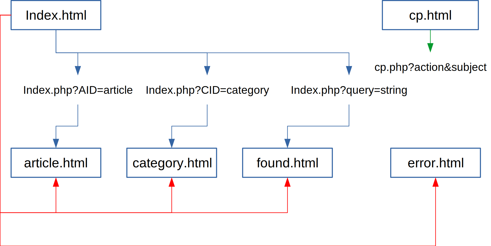
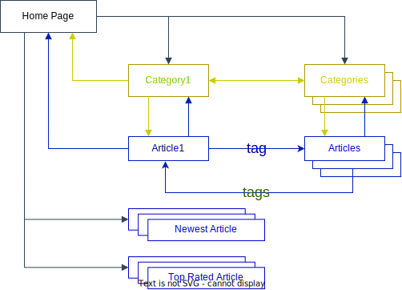
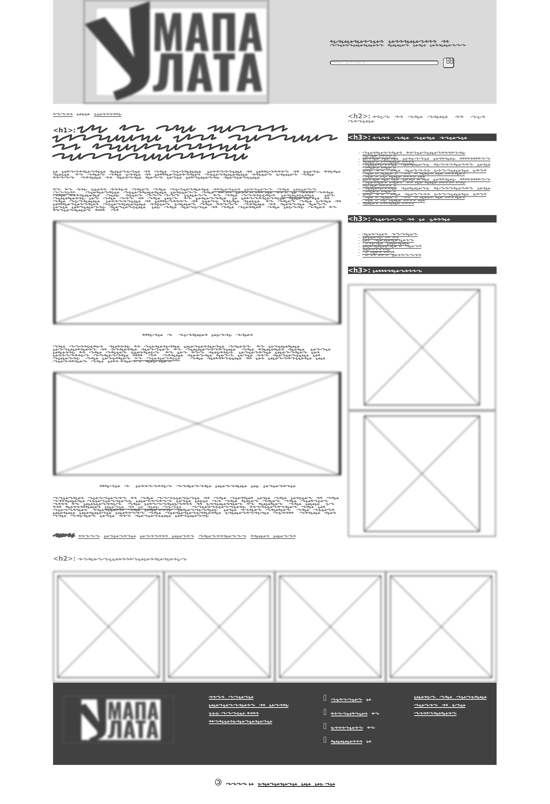
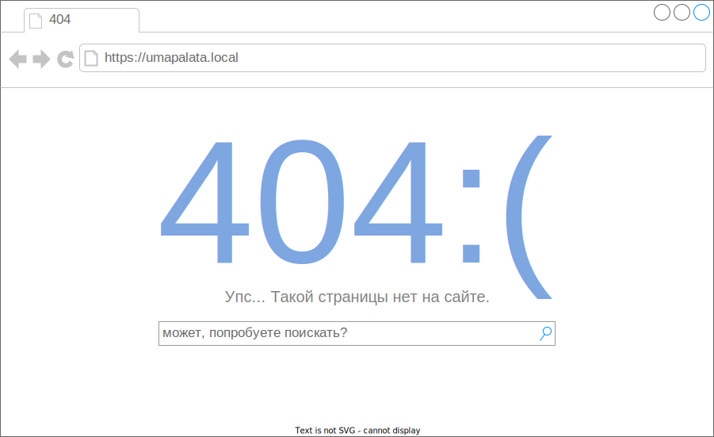

ОБЩИЕ ПОЛОЖЕНИЯ
Техническое задание оформляют в соответствии с ГОСТ 19.106-78 на листах формата 11 и 12
по ГОСТ 2.301-68, как правило, без заполнения полей листа. Номера листов (страниц)
проставляют в верхней части листа над текстом.
Лист утверждения и титульный лист оформляют в соответствии с ГОСТ 19.104-78. Информационную
часть (аннотацию и содержание), лист регистрации изменений допускается в документ не включать.
Для внесения изменений или дополнений в техническое задание на последующих стадиях
разработки программы или программного изделия выпускают дополнение к нему. Согласование
и утверждение дополнения к техническому заданию проводят в том же порядке, который установлен
для технического задания.
В техническое задание допускается включать приложения.
В зависимости от особенностей программы или программного изделия допускается уточнять
содержание разделов, вводить новые разделы или объединять отдельные из них.
Техническое задание
на разработку учебного веб-сайта
(на основании ГОСТ 19.201-78)
1. Общие сведения о системе
В разделе "Введение" указывают наименование, краткую характеристику области
применения программы или программного изделия и объекта, в котором используют программу
или программное изделие.
Веб-сайт "УмапаЛата" (далее "сайт" или "система") - обновляемый информационный ресурс, представляющий статьи из различных редактируемых тематических разделов, доступный по адресу http://umapalata.local.
Сайт ориентирован на применение в качестве учебно-методического пособия по разработке веб-ориентированных систем в ходе изучения дисциплины "Веб-программирование" студентами направлений "ПИн", "ПЭАССН", "ИВТ" кафедры АСОИУ ОмГТУ.
Как наглядное пособие, представляет собой типичную CRUD-систему, реализующую функции отображения и изменения тематических статей, оформленных в виде веб-страниц.
2. Основания для разработки
- ООП и УП направлений ....,
- рабочая программа дисциплины "Веб-программирование" (омгту, дата утверждения)
- Полное наименование разработки: информационный сайт "УмапаЛата".
В разделе "Назначение разработки" должно быть указано функциональное и эксплуатационное
назначение программы или программного изделия.
3. Назначение разработки
Цель разработки - закрепление знаний и навыков, формируемых в ходе изучения дисциплины "Веб-программирование".
Система предназначена для использования в качестве примера, иллюстрирующего основные аспекты разработки веб-сайтов.
Целевой аудиторией являются неавторизованные пользователи (посетители) и авторизованные пользователи (авторы) возрастной категории 16+ из числа студентов, изучающих дисциплину "Веб-программирование". Для целевой аудитории предоставляется свободный доступ к необфусцированному исходному коду веб-страниц на стороне клиента.
4. Требования к системе
4.1 Функциональные требования
требования к функциональным характеристикам (требования к составу выполняемых функций,
организации входных и выходных данных, временным характеристикам и т.п.)
[ЧТО ДОЛЖНА ДЕЛАТЬ система и КАК ИМЕННО, чтобы реализовать назначение и достигнуть поставленной цели]
Also [https://analytics.infozone.pro/formation-requirements-and-classification-requirements/#i-10]
Стандартные формы для специфицирования функциональных требований:
- Описание функции или объекта.
- Описание входных данных и их источники.
- Описание выходных данных с указанием пункта их назначения.
- Указание, что необходимо для выполнения функции.
- Если это спецификация функции, необходимо описание предварительных условий (предусловий),
которые должны выполняться перед вызовом функции, и описание заключительного условия
(постусловия), которое должно быть выполнено после завершения выполнения функции.
- Описание побочных эффектов (если они есть).
Also [https://siteclinic.ru/blog/technical-aspects/tz-na-razrabotku-sajta-primer/#4]
Система должна выполнять следующие основные функции:
- Чтение статей в режиме "полный текст" для всех групп пользователей, при этом, на странице с выбранной пользователем статьей должны отображаться ссылки на связанную информацию (списки ссылок на новые/популярные статьи из текущего раздела, анонсы статей с такими же тегами)
- ЧТО? Отображение списка самых популярных статей.
КАК? Элементы списка должны выводиться в сокращенном формате (заголовок статьи, анонс/реферат (фрагмент текста длиной до 300 (?) символов), дата публикации в формате dd/mm/YYYY, автор, список теги).
Количество элементов списка должно быть настраиваемым через панель управления и варьироваться в диапазоне от 3 до 10.
Рейтинг популярности определенной статьи должен вычисляться автоматически, по количеству просмотров. При этом способ обращения к этой статье (переход из поисковой системы, переход со стороннего сайта, внутренний переход, тайп-ин) не учитывается... - Отображение списка самых новых статей ...
- Отображение списка тематических разделов/категорий со статьями ...
- Отображение списка тегов(которые одновременно являются ключевыми словами), по которым статьи могут быть найдены ...
- Поиск статей по тегам (??? полнотекстовый поиск) ...
- Добавление, редактирование и удаление статей авторизованными пользователями. Для этого должна быть предусмотрена системная панель управления, доступ к которой осуществляется прямым вводом адреса в адресной строке браузера.
- Разграничение доступа на уровне пользователей с предоставлением прав создания, редактирования, удаления собственных статей для авторизованных пользователей и только чтения для прочих.
- Добавление новых пользователей с правом на добавление/изменение собственных статей администратором сайта. Управление пользователями должно осуществляться через сторонние клиентские приложения (phpMyAdmin, консольный MySQL-клиент и т.п.)
- Добавление новых и изменение имеющихся разделов/категорий администратором сайта. Удаление разделов, содержащих хотя бы одну статью не предполагается ????
- ...
Далее пошли нефункциональные требования, т.е.
[ЧТО и КАК должна делать система, чтобы обеспечить выполнение ФУНКЦИОНАЛЬНЫХ ТРЕБОВАНИЙ]
4.2 Требования к надежности
требования к надежности (требования к обеспечению надежного функционирования
(обеспечение устойчивого функционирования, контроль входной и выходной информации,
время восстановления после отказа и т.п.))
Для ускорения работы страницы статей должны кэшироваться (Как? сохранять в каталог static, проверять время сохранения (stat)?)
Реализация функции поиска статей должна быть основана на передаче строки запроса методом GET.
...
4.3 Условия эксплуатации
условия эксплуатации (условия эксплуатации (температура окружающего воздуха, относительная
влажность и т.п. для выбранных типов носителей данных), при которых должны обеспечиваться
заданные характеристики, а также вид обслуживания, необходимое количество и квалификация
персонала);
Сайт должен функционировать в штатном режиме при нормальных условиях в части температуры окружающего воздуха, относительной влажности, атмосферного давления и т.п., которые должен обеспечивать выбранный поставщик услуг хостинга. Дополнительные требования к условиям эксплуатации не предъявляются.
В процессе эксплуатации сайта должны выполняться следующие виды сервисных работ (обслуживание):
- полное резервное копирование сайта (после каждого обновления серверных скриптов);
- резервное копирование БД (ежедневно, по расписанию, во время наименьшей нагрузки (определяется по лог-файлам веб-сервера));
- продление регистрации доменного имени (ежегодно);
- ...
Все перечисленные виды обслуживания должны производиться персоналом Заказчика. Количество сотрудников Заказчика, задействованных на обслуживание сайта, не должно превышать 1 (одного) человека. Минимальные квалификационные требования к обслуживающему персоналу не должны превышать требований к квалификации инженера-программиста II категории.
4.4 Состав и параметры технических средств
требования к составу и параметрам технических средств (необходимый состав
технических средств с указанием их основных технических характеристик);
4.4.1 Требования к аппаратному обеспечению сервера: ...
4.4.2 Требования к аппаратному обеспечению клиентов: устанавливаются на уровне рекомендованных требований для работы с клиентским ПО, указанном в п.***
4.5 Информационная и программная совместимость
требования к информационной и программной совместимости (требования к
информационным структурам на входе и выходе и методам решения, исходным кодам,
языкам программирования и программным средствам(***), используемым программой,
при необходимости должна обеспечиваться защита информации и программ)
4.5.1 Требования к исходному коду
Исходный код серверных и клиентских скриптов должен быть в основном реализован с использованием функционального стиля (функциональной парадигмы). Поскольку разработка позиционируется как практическое пособие по дисциплине "Веб-программирование", то в учебных целях часть кода должна быть реализована в структурном стиле, а часть - в соответствии с объектно-ориентированной парадигмой. Применение того или иного стиля разработки для реализации отдельных функций системы согласовывается между заказчиком и исполнителем непосредственно в процессе разработки.
4.5.2 Структура сайта
Физическая структура сайта приведена на рисунке 1.
UmapaLata
├── [-rw-rw-r--] index.php
└── [drwxrwxr-x] templates
└── [drwxrwxr-x] images
...
...
...
Рис. 1. Физическая структура (предварит.)
Назначение каталогов и файлов:
- UmapaLata/ - основной каталог (DocumentRoot)
- templates/ - каталог для размещения шаблонов
- templates/images/ - графические элементы оформления страниц, используемые в шаблонах
- index.php - начальная страница
- cp.php - панель управления (может в виде SPA? и/или с возможностью запуска и работы на локальном хосте, а не на сервере(безопасней же будет))
- ...
Логическая структура сайта приведена на рис. 2.
Рис. 2. Логическая структура (предварит.)
Связи между элементами физической и логической структурами должны устанавливаться путем преобразования адресов по следующей схеме:
/ -> index.php
/category-name/page-title-in-english-or-transliterated-title.html -> index.php?AID=page-title-in-english-or-transliterated-title
/categories/ -> index.php?CID=all
/category-name/ -> index.php?CID=category-name
/page-title-in-english-or-transliterated-title.html -> error404
Внутренняя перелинковка страниц должна быть организована по комбинированной схеме, приведенной на рис. 3.
Рис. 3. Схема перелинковки страниц
4.5.3 Пользовательский интерфейс
Концепция оформления страниц сайта должна основываться на функциональности и минималистичности. Дизайн страниц не должен отвлекать от основного содержания. При оформлении элементов страниц должна быть использована цветовая схема, приведенная в таблице 1.
Таблица 1.
| Цвет | Код | Описание |
|---|---|---|
| Midnight Blue | #41729f | Цвет ссылок в основном тексте и ... |
| Blue Gray | #5885af | |
| Dark Blue | #274472 | Основной цвет заголовков первого-третьего уровней, может использоваться также для отображения элементов с инвертированной цветовой схемой |
| Baby Blue | #dae8fc | Цвет фоновой заливки в блоке header и акцентированных блоках. |
| Light Gray | #4d4d4d | Цвет основного текста |
| White | #FFF | Основной фоновый цвет, цвет текста в элементах с инвертированной цветовой схемой |
Для оформления страниц и представления содержимого должны использоваться шрифты, перечисленные в таблице 2.
Таблица 2.
| Гарнитура | Подстановка | Описание |
|---|---|---|
| Lora | serif | Основной текст |
| Ubuntu Condensed | sans-serif | Заголовки всех уровней |
| Awesome | - | Элементы инфографики |
Все страницы сайта должны быть адаптированы для просмотра на мобильных и настольных системах. Для целевых страниц (статей) должна быть предусмотрена версия для печати, исключающая вывод элементов страницы, не имеющих непосредственного отношения к выбранной статье (баннеры, счетчики, навигационные блоки и т.п.). Внешний вид страниц сайта с учетом разрешения экрана должен соответствовать макетам, приведенным в приложении 1.
4.5.4 Требования к маркировке и упаковке
требования к маркировке и упаковке (в общем случае указывают требования к маркировке
программного изделия, варианты и способы упаковки);
4.5.5 Требования к транспортированию и хранению
требования к транспортированию и хранению (должны быть указаны для программного изделия условия транспортирования, места хранения, условия хранения, условия складирования, сроки хранения в различных условиях);
4.5.6 Специальные требования
????? Специальные требования к системе не предъявляются.
5. Требования к программной документации
В разделе "Требования к программной документации" должны быть указаны предварительный
состав программной документации и, при необходимости, специальные требования к ней.
6. Технико-экономические показатели
В разделе "Технико-экономические показатели" должны быть указаны: ориентировочная экономическая эффективность, предполагаемая годовая потребность, экономические преимущества разработки по сравнению с лучшими отечественными и зарубежными образцами или аналогами.
7. Стадии и этапы разработки
В разделе "Стадии и этапы разработки" устанавливают необходимые стадии разработки, этапы и содержание работ (перечень программных документов, которые должны быть разработаны, согласованы и утверждены), а также, как правило, сроки разработки и определяют исполнителей.
| №пп | Состав и содержание работ | Объем работ (в рабочих днях) |
|---|---|---|
| 1 | ||
| 2 | ||
| ... | ||
| Общая длительность работ | ||
8. Порядок контроля и приемки
В разделе "Порядок контроля и приемки" должны быть указаны виды испытаний и общие требования к приемке работы.
9. Приложения
В приложениях к техническому заданию, при необходимости, приводят:
- перечень научно-исследовательских и других работ, обосновывающих разработку;
- схемы алгоритмов, таблицы, описания, обоснования, расчеты и другие документы,
которые могут быть использованы при разработке;
- другие источники разработки.
Приложение 1а. Макет стартовой страницы (ширина экрана 1200px и более)
Использован онлайн-сервис app.diagrams.net (draw.io)

Приложение 1б. Макет статьи (ширина экрана 1200px и более)
Для создания прототипа было использовано расширение Page to wireframe для браузера Chrome
Приложение 1в. Макет статьи (версия для печати)
Приложение 1г. Макет страницы ошибок (ширина экрана 1200px и более)
